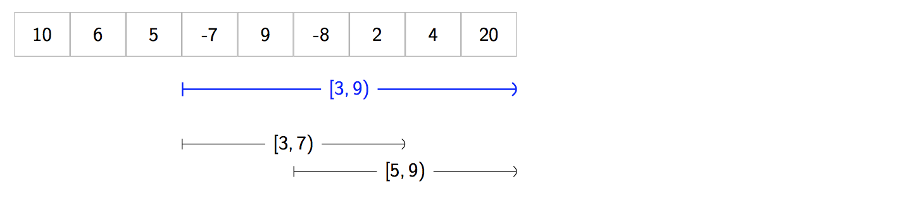

I'm excited to present Sparse Tables. Despite being somewhat niche, Sparse Tables are simple to implement and extremely powerful.
Let's suppose:
[*] where f is also "idempotent". Don't worry, I'll explain this in a moment.
Our task is as follows:
[l, r) by performing f(a[l], a[l + 1], a[l + 2], ..., a[r - 1]); taking all the elements in the range and applying f to themFor example, if we have an array of numbers:
var a = [ 20, 3, -1, 101, 14, 29, 5, 61, 99 ]and our function f is the min function.
Then we may be given a query for interval [3, 8). That means we look at the elements:
101, 14, 29, 5, 61
because these are the elements of a with indices
that lie in our range [3, 8) – elements from index 3 up to, but not including, index 8.
We then we pass all of these numbers into the min function,
which takes the minimum. The answer to the query is 5, because that's the result of min(101, 14, 29, 5, 61).
Imagine we have millions of these queries to process.
- Query 1: Find minimum of all elements between 2 and 5
- Query 2: Find minimum of all elements between 3 and 9
- ...
- Query 1000000: Find minimum of all elements between 1 and 4
And our array is very large. Here, let's say Q = 1000000 and N = 500000. Both numbers are huge. We want to make sure that we can answer each query really quickly, or else the number of queries will overwhelm us!
So that's the problem.
The naive solution to this problem is to perform a for loop
to compute the answer for each query. However, for very large Q and very large N this
will be too slow. We can speed up the time to compute the answer by using a data structure called
a Sparse Table. You'll notice that so far, our problem is exactly the same as that of the Segment Tree
(assuming you're familiar). However! ... there's one crucial difference between Segment Trees
and Sparse Tables ... and it concerns our choice of f.
Suppose we wanted to find the answer to [A, D).
And we already know the answer to two ranges [A, B) and [C, D).
And importantly here, ... these ranges overlap!! We have C < B.
So what? Well, for f = minimum function, we can take our answers for [A, B) and [C, D)
and combine them!
We can just take the minimum of the two answers: result = min(x1, x2) ... voilà!, we have the minimum for [A, D).
It didn't matter that the intervals overlap - we still found the correct minimum.
But now suppose f is the addition operation +. Ok, so now we're taking sums over ranges.
If we tried the same approach again, it wouldn't work. That is,
if we took our answers for [A, B) and [C, D)
and added them together we'd get a wrong answer for [A, D).
Why? Well, we'd have counted some elements twice because of the overlap.
Later, we'll see that in order to answer queries, Sparse Tables use this very technique.
They combine answers in the same way as shown above. Unfortunately this means
we have to exclude certain binary operators from being f, including +, *, XOR, ...
because they don't work with this technique.
In order to get the best speed of a Sparse Table,
we need to make sure that the f we're using is an idempotent binary operator.
Mathematically, these are operators that satisfy f(x, x) = x for all possible x that could be in a.
Practically speaking, these are the only operators that work; allowing us to combine answers from overlapping ranges.
Examples of idempotent f's are min, max, gcd, boolean AND, boolean OR, bitwise AND and bitwise OR.
Note that for Segment Trees, f does not have to be idempotent. That's the crucial difference between
Segment Trees and Sparse Tables.
Phew! Now that we've got that out of the way, let's dive in!
Let's use f = min and use the array:
var a = [ 10, 6, 5, -7, 9, -8, 2, 4, 20 ]In this case, the Sparse Table looks like this:
What's going on here? There seems to be loads of intervals.
Correct! Sparse tables are preloaded with the answers for lots of queries [l, r).
Here's the idea. Before we process our Q queries, we'll pre-populate our Sparse Table table
with answers to loads of queries;
making it act a bit like a cache. When we come to answer one of our queries, we can break the query
down into smaller "sub-queries", each having an answer that's already in the cache.
We lookup the cached answers for the sub-queries in
table in constant time
and combine the answers together
to give the overall answer to the original query in speedy time.
The problem is, we can't store the answers for every single possible query that we could ever have ...
or else our table would be too big! After all, our Sparse Table needs to be sparse. So what do we do?
We only pick the "best" intervals to store answers for. And as it turns out, the "best" intervals are those
that have a width that is a power of two!
For example, the answer for the query [10, 18) is in our table
because the interval width: 18 - 10 = 8 = 2**3 is a power of two (** is the exponentiation operator).
Also, the answer for [15, 31) is in our table because its width: 31 - 15 = 16 = 2**4 is again a power of two.
However, the answer for [1, 6) is not in there because the interval's width: 6 - 1 = 5 is not a power of two.
Consequently, we don't store answers for all possible intervals that fit inside a –
only the ones with a width that is a power of two.
This is true irrespective of where the interval starts within a.
We'll gradually see that this approach works and that relatively speaking, it uses very little space.
A Sparse Table is a table where table[w][l] contains the answer for [l, l + 2**w).
It has entries table[w][l] where:
2**wSome examples:
table[3][0] = -8: our width is 2**3, we start at l = 0 so our query is [0, 0 + 2**3) = [0, 8).min(10, 6, 5, -7, 9, -8, 2, 4, 20) = -8.table[2][1] = -7: our width is 2**2, we start at l = 1 so our query is [1, 1 + 2**2) = [1, 5).min(6, 5, -7, 9) = -7.table[1][7] = 4: our width is 2**1, we start at l = 7 so our query is [7, 7 + 2**1) = [7, 9).min(4, 20) = 4.table[0][8] = 20: our width is 2**0, we start at l = 8 so our query is[8, 8 + 2**0) = [8, 9).min(20) = 20.A Sparse Table can be implemented using a two-dimentional array.
public class SparseTable<T> {
private var table: [[T]]
public init(array: [T], function: @escaping (T, T) -> T, defaultT: T) {
table = [[T]](repeating: [T](repeating: defaultT, count: N), count: W)
}
// ...
}To build a Sparse Table, we compute each table entry starting from the bottom-left and moving up towards
the top-right (in accordance with the diagram).
First we'll compute all the intervals for w = 0, then compute all the intervals
and for w = 1 and so on. We'll continue up until w is big enough such that our intervals are can cover at least half the array.
For each w, we compute the interval for l = 0, 1, 2, 3, ... until we reach N.
This is all achieved using a double for-in loop:
for w in 0..<W {
for l in 0..<N {
// compute table[w][l]
}
}To compute table[w][l]:
2**w = 1.
[l, l + 1).a[l] (e.g. the minimum of over a list with one elementtable[w][l] = a[l]
[l, l + 2**w) for some l.2**w is cut into two intervals, each of width 2**(w - 1).table[w][l] = f(table[w - 1][l], table[w - 1][l + 2 ** (w - 1)])
For example for a = [ 10, 6, 5, -7, 9, -8, 2, 4, 20 ] and f = min:
table[0][2] = 5. We just had to look at a[2] because the range has a width of one.table[1][7] = 4. We looked at table[0][7] and table[0][8] and apply f to them.table[3][1] = -8. We looked at table[2][1] and table[2][5] and apply f to them.public init(array: [T], function: @escaping (T, T) -> T, defaultT: T) {
let N = array.count
let W = Int(ceil(log2(Double(N))))
table = [[T]](repeating: [T](repeating: defaultT, count: N), count: W)
self.function = function
self.defaultT = defaultT
for w in 0..<W {
for l in 0..<N {
if w == 0 {
table[w][l] = array[l]
} else {
let first = self.table[w - 1][l]
let secondIndex = l + (1 << (w - 1))
let second = ((0..<N).contains(secondIndex)) ? table[w - 1][secondIndex] : defaultT
table[w][l] = function(first, second)
}
}
}
}Building a Sparse Table takes O(NlogN) time.
The table itself uses O(NlgN) additional space.
Suppose we've built our Sparse Table. And now we're going to process our Q queries.
Here's where our work pays off.
Let's suppose f = min and we have:
var a = [ 10, 6, 5, -7, 9, -8, 2, 4, 20 ]And we have a query [3, 9).
First let's find the largest power of two that fits inside [3, 9). Our interval has width 9 - 3 = 6. So the largest power of two that fits inside is four.
We create two new queries of [3, 7) and [5, 9) that have a width of four.
And, we arrange them so that to that they span the whole interval without leaving any gaps.

Because these two intervals have a width that is exactly a power of two we can lookup their answers in the Sparse Table using the
entries for w = 2. The answer to [3, 7) is given by table[2][3], and the answer to [5, 9) is given by table[2][5].
We compute and return min(table[2][3], table[2][5]). This is our final answer!
In general, for each query: [l, r) ...
Find W, by looking for the largest width that fits inside the interval that's also a power of two. Let largest such width = 2**W.
Form two sub-queries of width 2**W and arrange them to that they span the whole interval without leaving gaps.
To guarantee there are no gaps, we need to align one half to the left and the align other half to the right.
Compute and return f(table[W][l], table[W][r - 2**W]).
public func query(from l: Int, until r: Int) -> T {
let width = r - l
let W = Int(floor(log2(Double(width))))
let lo = table[W][l]
let hi = table[W][r - (1 << W)]
return function(lo, hi)
}Finding answers to queries takes O(1) time.
query take constant time.Q = O(N*N)O(N*N*N) where a Sparse Table takes time O(N*N).[†] Although technically, it's possible to rewrite the query method
to add support for non-idempotent functions. But in doing so, we'd bump up the time up from O(1) to O(lgn),
completely defeating the original purpose of Sparse Tables - supporting lightening quick queries.
In such a case, we'd be better off using a Segment Tree (or a Fenwick Tree)
That's it! See the playground for more examples involving Sparse Tables.
You'll see examples for: min, max, gcd, boolean operators and logical operators.
Written for Swift Algorithm Club by James Lawson